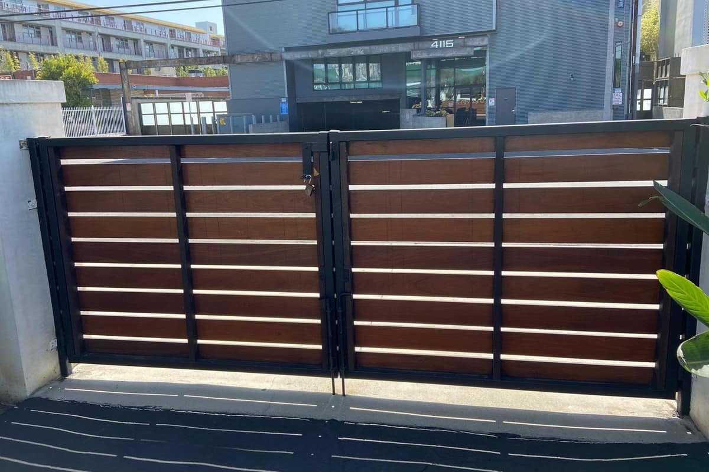
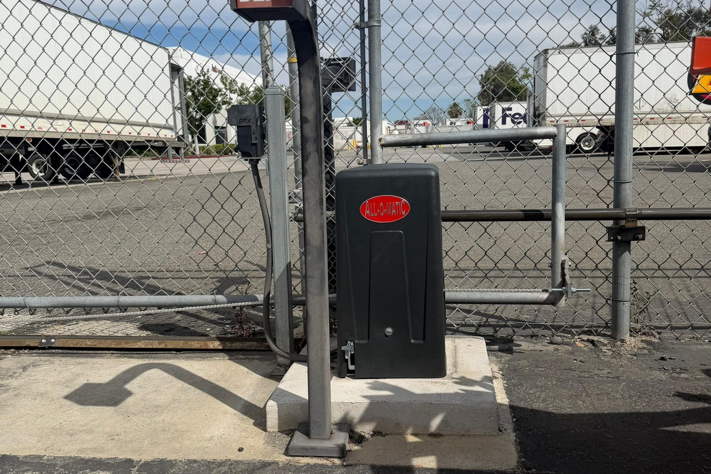

Bent frames, broken hinges, rust damage, missing pickets — we restore and repair ornamental iron gates throughout the DFW Metroplex. Quality welding and metalwork, same-day response available.
Ornamental iron gates are one of the most durable and beautiful entry solutions in DFW — but they're not immune to damage. Vehicle impacts, storm damage, ground settlement, and decades of corrosion from lawn sprinklers all take their toll. We repair and restore iron gates without the cost of full replacement.
Our technicians include experienced metal fabricators. We weld on-site, straighten bent frames, replace individual pickets or rails, and refinish treated surfaces — all in the field, not in a shop. This saves you time and significantly reduces the cost of restoring your gate.


We weld on-site at your property — no hauling, no shop, no waiting weeks for your gate to come back.
We can fabricate replacement sections and decorative elements to match your existing gate design.
Proper rust treatment and primer before painting ensures the repair holds up to DFW weather for years.
We tell you when repair makes sense vs. replacement. We never oversell work you don't need.
Real results from real customers across Dallas-Fort Worth.
We carry OEM and compatible parts for every major gate brand in the DFW market.
Don't see your brand? +1 (214) 735-4314 — we service virtually every gate system.
Tell us what’s wrong and we’ll call you back within 30 minutes. Or reach us directly at +1 (214) 735-4314.
On-site welding and metalwork across all of Dallas-Fort Worth. Same-day response available.
+1 (214) 735-4314